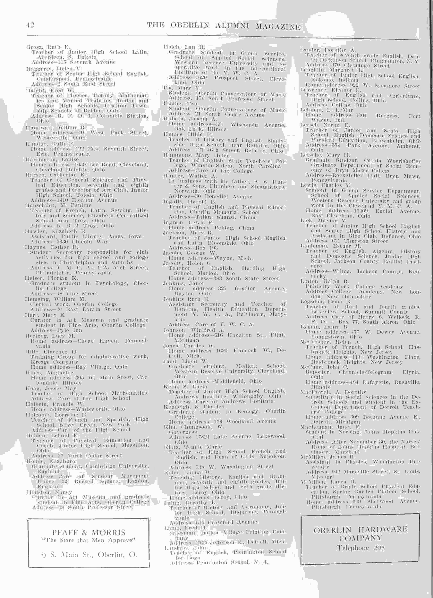

Mary Yung-Foh Hu
访问原网页 ↗Visit original website ↗

同期校友刊作Hu, Mary Y.，列入音乐学院，年鉴作Mary Yung-Foh Hu，列教育专业。1923年船单作Hu Yung Foh。黄自三名子女的回忆印页101明确记胡永馥1927年已在上海去世，早于滕、侯1934年婚礼。
访问原网页 ↗Visit original website ↗

同期校友刊作Hu, Mary Y.，列入音乐学院，年鉴作Mary Yung-Foh Hu，列教育专业。1923年船单作Hu Yung Foh。黄自三名子女的回忆印页101明确记胡永馥1927年已在上海去世，早于滕、侯1934年婚礼。